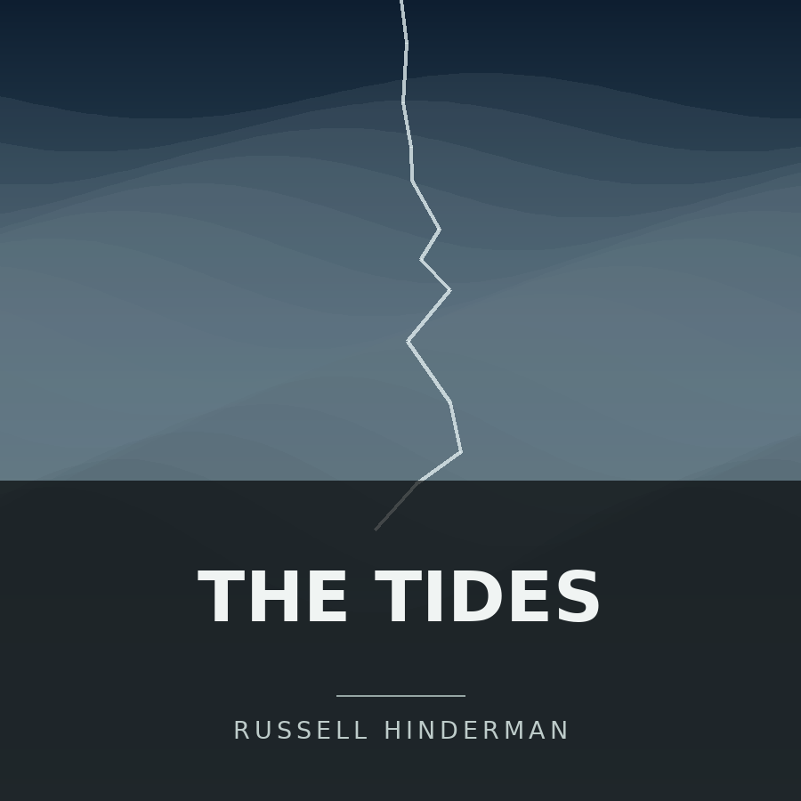
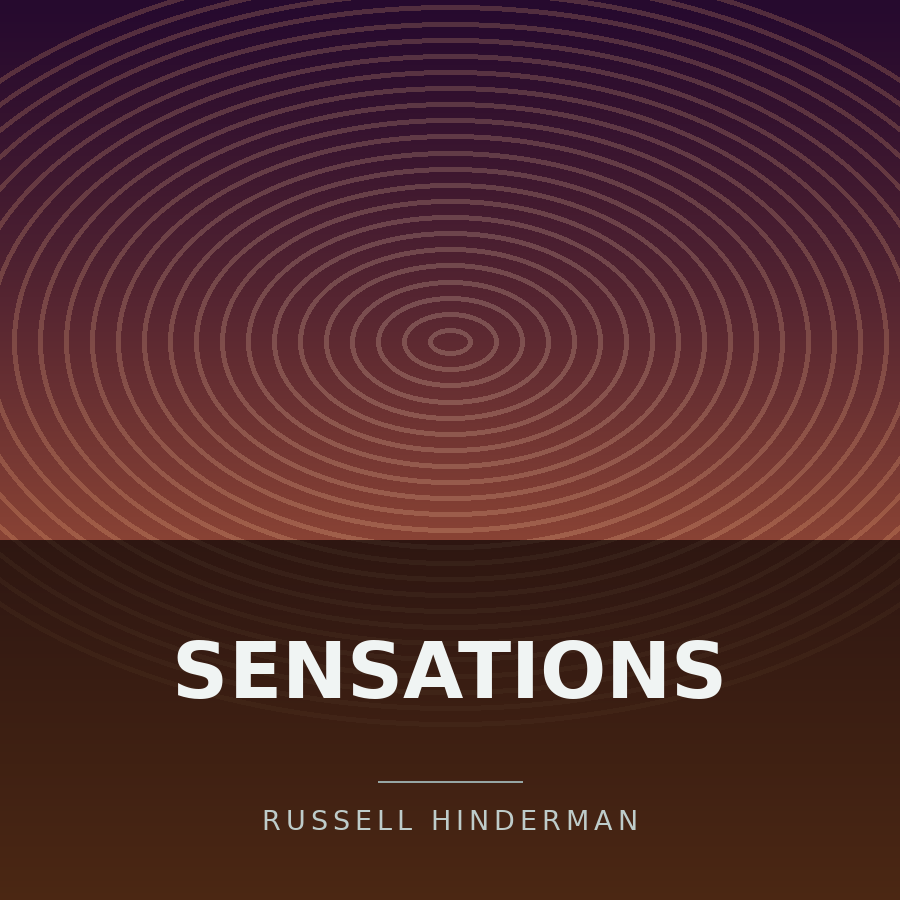
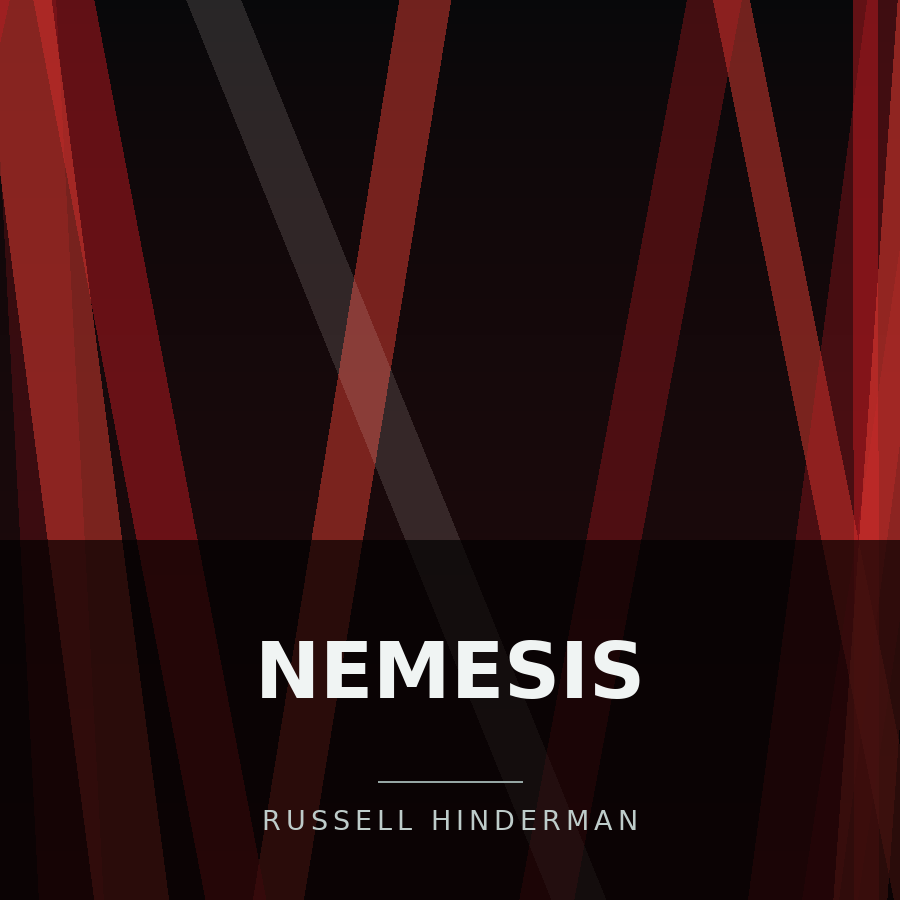
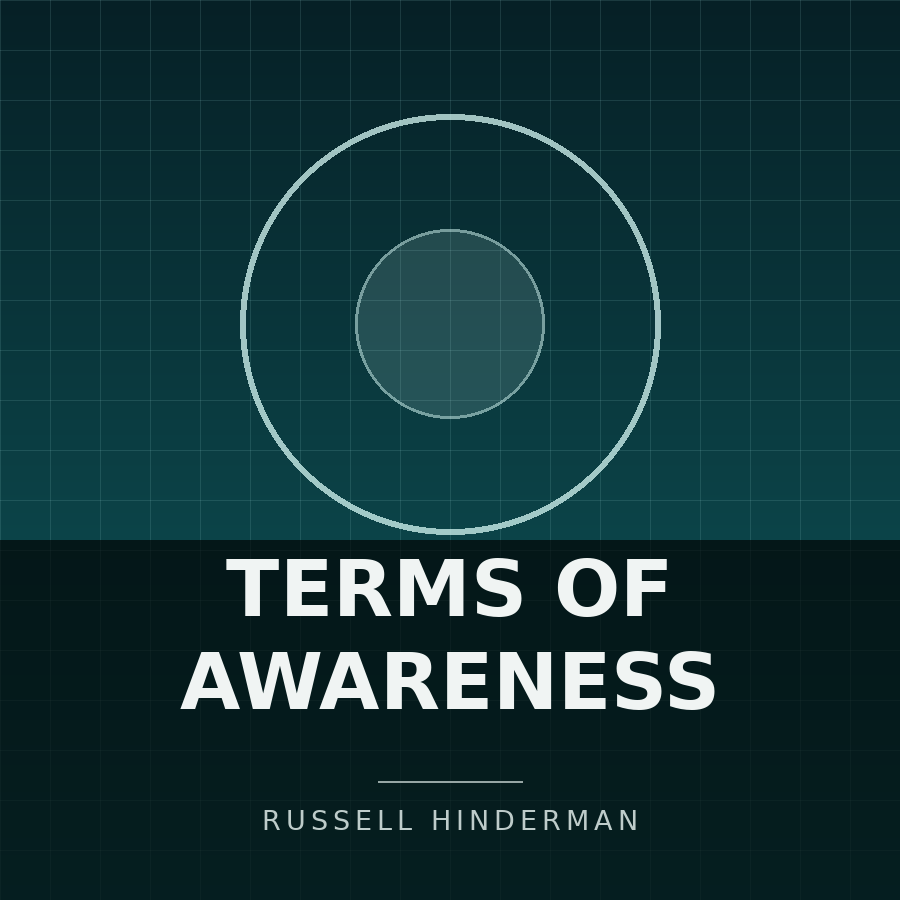

This is the Music page. It has three sections below, in this order: Current Album, then Listen to One of My Releases, then How I Build an Album. The middle section holds a table of six releases with eight columns: Artwork, Release, Format, Year, Tracks, Running Time, Credits, and Listen. After the last section you will reach the page footer, which holds my name and my email address.
Current Album
The most current album I'm working on is called Paranoia. The way I produce music is I work on big catalogs of albums, and then hand pick which ones I'd like to distribute.
Listen to One of My Releases
Everything below is out now on YouTube Music. If you only have time for one thing, start with Fractured tides, the opening track from The tides.
| Artwork | Release | Format | Year | Tracks | Running Time | Credits | Listen |
|---|---|---|---|---|---|---|---|
 |
The tides | Single | 2026 | 3 | 22 minutes | Russell Hinderman | Listen to The tides |
 |
The cost of love | Album | 2026 | 14 | 1 hour 24 minutes | Russell Hinderman | Listen to The cost of love |
 |
Sensations | Album | 2026 | 8 | 46 minutes | Russell Hinderman | Listen to Sensations |
 |
Nemesis | EP | 2026 | 4 | 21 minutes | Russell Hinderman | Listen to Nemesis |
 |
Terms of awareness | EP | 2026 | 4 | 18 minutes | Russell Hinderman | Listen to Terms of awareness |
| The betrayer of warnings | Single | 2026 | 1 | 5 minutes 8 seconds | Russell Hinderman, featuring DJSODAPOP | Listen to The betrayer of warnings |
How I Build an Album
Every release follows roughly the same path, from the first rough idea to the finished record. The software behind each of these steps is described on the Equipment page.
- Sketch out ideas and build a large catalog of songs.
- Produce the tracks that show the most promise.
- Hand pick the strongest songs for the album.
- Mix and master the final selections.
- Distribute the finished album.